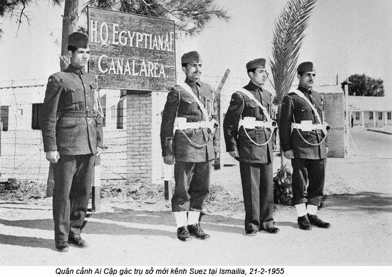

Chương VIII

ác nguyên nhân xung đột
Cả hai bên Israel và Ả Rập đều biết rằng Hiệp ước năm 1949 chỉ tạo được một cuộc hưu chiến. Israel cần có một thời gian để tổ chức, kiến thiết quốc gia mà Ả Rập cũng cần có một thời gian để củng cố lại lực lượng. Vấn đề giải quyết như vậy chưa ổn vì còn nhiều nguyên nhân xung đột quá:
1. Trước hết là vấn đề biên giới
Người Ả Rập không chịu nhận biên giới đó: thiệt hại cho họ. Mà cũng không ai tin rằng biên giới sẽ vĩnh viễn như vậy; nó không tự nhiên, nó rất kỳ dị, không thể trường cửu được.
Chính quyền Israel có lẽ hả dạ vì được hưởng phần đất lớn nhất và mong được yên ổn trong một thời gian để khai thác hết nó đã, nhưng một số người Do Thái tham lam tuyên bố rằng đất đai của họ vẫn còn chật hẹp quá. Một ngày kia họ sẽ lớn lên - mà họ mau lớn làm sao! Trong có mấy năm cả triệu Do Thái ở khắp thế giới đổ về Israel thì chiếc áo họ đành tạm nhận năm 1949 sẽ phải nứt ra. Họ thường nhắc nhau lời Chúa hứa với Abraham trong Thánh kinh: Ta ban cho con cháu ngươi dải đất nằm từ sông Ai Cập (tức sông Nile) tới sông Euphrate và họ hy vọng mở mang bờ cõi từ núi Taurus (ở Tiểu Á) tới kinh Suez nghĩa là muốn nuốt trọn xứ Syrie, xứ Liban, xứ Jordanie, một phần xứ Iraq, xứ Ả Rập Saudi và xứ Ai Cập. Mới có quốc gia mà đã đòi làm thực dân!
Họ bất mãn về cái thẻo Gaza như một lưỡi dao kề bên sườn họ, bất mãn nhất về biên giới ở Jérusalem. Châu thành bị chia đôi, ở giữa là một dải phi chiến, họ mất bức tường Than khóc (nằm trong khu Jordanie). Hai bên dải này quân đội Israel và Ả Rập đi tuần suốt ngày đêm. Từ 1949 đến 1950, Israel đã tố cáo Ả Rập vi phạm hiệp ước đình chiến 1612 lần, Ả Rập cũng tố cáo Israel vi phạm 1348 lần: vượt biên giới, hoặc ở bên này bắn qua bên kia, phi cơ bay trên không phận của nhau, lại có cả vụ đốt phá lẫn nhau nữa. Không ngày nào là trên biên giới Israel- Jordanie không có vụ lộn xộn, nhiều vụ đổ máu xảy ra ngay gần mộ Đức Ki-tô.
Liên hiệp quốc mấy lần đề nghị quốc tế hoá châu thành đó, nhưng không bên nào chịu vì bên nào cũng ngờ rằng Liên hiệp quốc không sao kiểm soát kỹ được, thế nào cũng có sự lén lút đưa người và khí giới vào, như vậy thà cứ giữ hiện trạng mà Israel và Jordanie tự kiểm soát lấy khu vực của mình còn hơn.
Ở biên giới Gaza cũng vậy: luôn luôn có những vụ Ả Rập đương đêm lẻn qua quậy phá Israel rồi rút về; Israel truy kích chớp nhoáng rồi cũng rút về.
2. Thứ nhì là vấn đề dân Ả Rập tản cư
Khi chiến tranh mới bùng năm 1948, Israel cho phát thanh, rải truyền đơn, dán bố cáo yêu cầu dân tộc Ả Rập đừng đi đâu cả, tính mạng tài sản sẽ được bảo đảm. Ai mà tin được sự bảo đảm đó. Với lại đài phát thanh Ả Rập cũng hô hào họ tản cư, và đại bác Ả Rập nã vào đâu thì làm sao phân biệt được Do Thái với Ả Rập. Cho nên dân Ả Rập dắt díu nhau rút qua bên kia biên giới gần hết, trước sau trên nửa triệu. Họ không phải chỉ vì hốt hoảng mà trốn đi, một phần còn vì tinh thần quốc gia, một phần vì sợ những hành động tàn nhẫn của Do Thái nữa như tại miền Deir ở gần Jérusalem.
Chỉ một vụ tản sát - mà trong chiến tranh, tránh sao cho khỏi được - đủ làm cho những người Ả Rập tại các nơi khác không dám ở lại.
Hết chiến tranh chính phủ Israel chỉ cho một số ít người Ả Rập theo đạo Ki-tô trở về, còn những người theo Hồi giáo thì cấm ngặt. Họ cấm là phải, chính phủ nào mà muốn có kẻ địch ở trong nước? Rốt cuộc có đến trên nửa triệu người Ả Rập tản cư ở Jordanie, 220.000 người ở miền Gaza, 100.000 ở Liban, 90.000 ở Syrie, tổng cộng non 1.000.000 người. Không rõ hiện nay ra sao chứ năm 1956 họ vẫn ở tạm gần biên giới, ngày nào cũng đăm chiêu ngóng về cố hương. Những gia đình từ 15 đến 20 người chui rúc dưới những tấm bố căng lên che nắng và mưa, bên cạnh những đống rác. Không có trường học, không có nhà thương. Trẻ em thì đánh giầy ở Amman (Jordanie), mà người lớn thì ở không vì không có công việc gì để làm. Họ sống hoàn toán nhờ sự trợ cấp của Liên hiệp quốc: mỗi năm mỗi người lãnh 37 Mỹ kim, mỗi tháng ba Mỹ kim, phần lớn do Hoa Kỳ và Anh đóng góp. May lắm là họ không đói,(1) Nhưng hình như chỉ 500.000 người được trợ cấp thôi.
Họ có lòng tự ái rất cao, tới trẻ em cũng ăn mặc sạch sẽ, áo vá chứ không rách, và không bao giờ chịu đi ăn xin. Người ta đề nghị cho họ di cư lại các miền phong phú, kiếm công ăn việc làm, như tới Iraq, tới Darhan, tới Kuwait, họ nhất định không chịu, cứ ăn vạ ở đó, khăng khăng đòi về cố hương như các người Do Thái trước kia vậy. Họ chịu nhận cái kiếp lang thang tới nay đã hai chục năm rồi. Chúa của họ bao giờ mới cứu họ? Lịch sử nhân loại sao mà nhiều chuyện bi thảm đến thế.
Họ oán các xứ Ả Rập, Liban, Jordanie, Syrie, Ai Cập đã phản bội họ mà đầu hàng Israel; họ oán Liên hiệp quốc đã hy sinh họ cho Israel.
Không ai có thể trách họ được. Lòng yêu quê hương là một tình cảm mãnh liệt, lý trí không thể thắng nổi. Bảo họ đi nơi khác ở có sướng hơn không, họ đáp:
- Ở đây còn có hy vọng về xứ, chứ đi nơi khác thì bỏ luôn quê cha đất tổ ư? Chúng tôi sống được là nhờ hy vọng. Người Do Thái mất quê hương phiêu bạt mười mấy thế kỷ mà vẫn hướng về Jérusalem, thì tại sao các ông lại bảo chúng tôi quên quê hương được khi chúng tôi xa nó mới có mười mấy năm nay?
Lại thêm nỗi một số chính khách Ả Rập cũng không muốn cho họ đi nơi khác, để các dân tộc Ả Rập luôn luôn nhớ cái nhục chung mà không nguôi cái thù Do Thái.
Quốc vương Jordanie, Abdallah, vì không oán Do Thái kịch liệt như các lãnh tụ Ả Rập khác cũng có lẽ vì Mỹ - Anh hứa hẹn gì với ông ta chăng, năm 1950 muốn tìm một giải pháp, nên thương lượng ngầm với Ben-Gurion, do độc long tướng quân Moshe Dayan làm trung gian để đổi chác đất đai gì với nhau đó, nhưng bị ám sát ngày 21 tháng 7 năm 1951 vì tội “phản dân tộc”.
Thủ tướng Liban là Ayad Soth cũng mất mạng vì muốn điều đình với Israel. Ta nên nhớ Liban là một xứ chịu ảnh hưởng của phương Tây từ thời Trung Cổ và dân một nửa theo Hồi giáo, một nửa theo Ki-tô giáo.
3. Thứ ba là xung đột về tôn giáo.
Một học giả và chính khách Pháp, ông Georges Vaucher, cựu Thư ký Uỷ ban Hồng Thập Tự quốc tế cựu Cao uỷ trong hoạt động quốc tế cứu trợ nạn đói ở Nga năm 1921-1922, sống ở Ai Cập hai mươi lăm năm, trong thế chiến vừa rồi làm đại biểu cho hội Hồng Thập Tổ quốc tế ở Tây Á cho rằng bi kịch Do Thái - Ả Rập khó mà chấm dứt được nguyên nhân không phải tại cái thế Israel chiếm đất, lấn đất, mà còn do tín ngưỡng của hai dân tộc đó nữa.
Người Do Thái nào cũng đọc kinh Cựu Ước, người Ả Rập nào cũng đọc kinh Coran mà trong hai kinh đó có nhiều đoạn làm cho hai dân tộc hiềm thù với nhau.
Chúng ta đều biết rằng khi đắc đạo rồi, muốn truyền bá “Chánh đạo”, Mohamed, nhà sáng lập Hồi giáo gom môn đồ lại mà bảo:
“Từ nay ta sẽ sống và chết với các ngươi, đời ta là đời của các ngươi, máu các ngươi là máu của ta, các ngươi thua là ta thua, các ngươi thắng là ta thắng. Hễ tụi dị giáo tấn công các ngươi thì các ngươi sẽ tắm trong máu của chúng!”
Hiện nay nhiều dân tộc theo Hồi giáo vẫn chưa bỏ cái quan niệm “thánh chiến” nguy hiểm đó.(2)
Đó là trong kinh Coran. Trong kinh Cựu Ước, ông Georges Vaucher đã trích dẫn nhiều đoạn rất có thể làm cho người Ả Rập bực mình mà tôi xin dịch ra dưới đây: (2)
“Ngày đó, đức Jahvé giao ước với Abraham rằng: “Ta cho dòng dõi ngươi xứ này, từ sông Ai Cập (Nile) tới sông cái kia, sông Euphrate, tức đất đai của dân tộc Kinit, Kenesit, Camonit, Kephaim, Amonit,Canan, Cohinlogarit và Gtebunit”.
(Sách Sáng Thế kỷ (4) – chương 15 – Tiết 18 – 21).
Khu đất đó vì vậy mà có tên là đất hứa (Terre promise). Đất Do Thái được đức Jahvé cho lại sống ở đó và đức Jahvé còn hứa đuổi những giống thổ dân để cho Do Thái được sống một mình:
“Ta sẽ không đuổi chúng đi hết trong một năm đâu e rằng đất đó thành đất hoang mất mà loài thú rừng sẽ sinh sản làm hại ngươi (“ngươi” - tức dân tộc Do Thái); mà ta sẽ đuổi chúng dần dần cho tới khi dân số ngươi đông đúc đủ làm chủ đất đó được. Ta sẽ phân định bờ cõi cho ngươi từ Hồng Hải cho tới biển Philistin, từ Sa mạc tới Sông Cái và ta sẽ giao phó dân bản xứ cho ngươi và ngươi sẽ đuổi chúng đi”.
(Sách Ai Cập phát trình ký (6) chương 23 tiết 29 – 31)
Biển Philistin tức là Địa Trung Hải, Sông Cái tức là sông Euphrate. Miền nói trung đoạn đó gồm Sinai, Syne và một phần sa mạc Ai Cập.
Sách Luật lệ ký (7), chương 17, tiết 16 cũng có câu:
“Ngươi phải diệt tất cả các dân tộc mà Jahvé Đức Chúa Trời sắp giao cho ngươi, mắt ngươi đừng đoái thương chúng và ngươi đừng thờ các thần của chúng”.
Đầu chương đó giọng còn mạnh hơn nhiều:
“Khi Jahvé, đức Chúa Trời của ngươi đã dẫn ngươi vô tới xứ mà ngươi sẽ làm chủ, và đuổi khỏi trước mặt ngươi nhiều dân tộc, tức Hetit, Giregasit, Amonit, Canaan, Pheresit, Hevit và Gtebunit, hết thảy là bảy dân tộc đông hơn ngươi và mạnh hơn ngươi; khi Jahvé, đức Chúa Trời đã giao phó cho ngươi, và ngươi đã đánh bại chúng, thì ngươi phải diệt hết chúng đi, đừng kết liên với chúng mà cũng đừng thương xót chúng. Ngươi đừng làm thông gia với chúng, đừng gả con gái cho con trai chúng, đừng cưới con gái chúng cho con trai mình, vì chúng sẽ dụ con trai ngươi lìa bỏ ta mà phụng sự các thần khác, mà cơn thịnh nộ của Chúa Trời sẽ bùng lên mà diệt ngươi trong nháy mắt đấy. Trái lại ngươi phải đối với bọn chúng như vầy: lật đổ bàn thờ của chúng đi, đập bể tượng thần của chúng đi, hạ các ngẫu tượng của chúng xuống, đốt các hình chạm của chúng đi.
Vì đối với Jahvé, đức Chúa Trời thì ngươi là một dân tộc thánh; Ngài đã lựa ngươi làm một dân tộc thuộc riêng về Ngài trong số tất cả các dân tộc trên mặt đất” (…)
Trong sách “Dân số kỳ”(7) chương 33, tiết 50, cũng dặn phải đuổi dân bản xứ đi, như “nhổ gai trong mắt”, “rút chông trong hông”. Rồi suốt cho tới Sách các “Tiên tri” ở cuối Cựu ước, còn nhiều đoạn làm cho người Ả Rập phải suy nghĩ:
“Ngươi sẽ chiếm được những thành lớn và đẹp mà ngươi không tốn công xáy dựng; sẽ chiếm được những nhà cửa đầy những của cải mà ngươi không mất công mua sắm; sẽ chiếm được những hố mà ngươi không phải đào, những cây nho và cây ô-liu mà ngươi không phải trồng”.
(Sách Luật lệ, chương 6, tiết 10-11).
Tôi biết có, một số người cho trong kinh Cựu ước không chứa những tài liệu sử, mà những người Ki-tô giáo chỉ coi những điều chép trong kinh là những hình ảnh tượng trưng những thực thể siêu việt xảy ra trong thế giới tâm linh giữa Thiện và Ác, giữa Ánh sáng và Bóng tối, và những đoạn Vaucher trích đó nên hiểu theo một nghĩa khác - chẳng hạn, không phải là diệt các dân bản xứ - tức diệt chủng - mà diệt cái ác ở các dân đó, không phải là chiếm nhà cửa, vườn tược mà tìm được hạnh phúc tinh thần:, giải thích như vậy, nghe cũng xuôi xuôi nhưng chắc là không thuyết phục được mọi người, nhất là Ả Rập, và ngay cả đa số tín đồ Do Thái nữa. Nhưng tín đồ này tụng hoài những đoạn kích thích mạnh mê như vậy, sẽ có thái độ ra sao với người Ả Rập?
Sự xác định đi xác định lại rằng dân Do Thái là “dân tộc được lựa chọn”, rằng xứ Palestine và tất cả tài nguyên của nó thuộc quyền của dân tộc Do Thái đã gây ra những hành động quá khích, của một hạng người Do Thái năm 1948.
Sau Hiệp ước 1949, còn một số người Ả Rập sống chung với người Do Thái ở Israel. Khi đi qua những giáo đường của nhau, người Ả Rập nghe người Do Thái tụng những đoạn ở trên, người Do Thái cũng nghe người Ả Rập tụng những câu ca ngợi thánh chiến của Mohamed thì tâm lý họ, ra sao? Tôi chắc rằng có vô số người Do Thái cứ tin theo nghĩa từng chữ trong Thánh kinh và cho rằng nhiều đoạn tiên tri trong đó đã ứng nghiệm, chẳng hạn như những đoạn:
“Đức Jahvé sẽ bắt con cháu ngươi (tức Jacob, một tộc trưởng Israel sinh 12 con trai; thủy thổ của 12 bộ tộc Israel) phiêu bạt, sống chung vớt các dân tộc khác trên thế giới (…) Mà sống với các dân tộc đó chúng sẽ không được yên ổn, không có chỗ ớ đặt chân, sống giữa kẻ lạ, lòng chúng sẽ ưu tư. Đởi sống của chúng sẽ chập chờn vô định và chúng sẽ run sợ ngày rồi tới đêm”
Nhưng rồi đức Jahvé cũng sẽ tha thứ cho con cưng của ngài:
“Ta sẽ gom dân tộc ngươi lại, hỡi Jacob, sẽ gom con dân còn lại của Israel”.
(Sách Michée, chương 2 tiết 12).
“Ta sẽ đem tù dân Israel ta trở về; chúng sẽ xây dựng lại các thành bị phá và ở đó, chúng sẽ lập vườn nho và uống rượu nho, sẽ làm vưởn và ăn trái. Ta sẽ thấy chung nó trên đất của chúng nó và chúng nó sẽ không bị nhổ khỏi đất mà ta ban cho”.
(Sách Amos, chương 8, tiết 14-15).
Chính François Musard, một người Do Thái lai Pháp, tác giả cuốn “Israel, miracle du XX siècle”, còn tin vậy thì trách chi những người Do Thái ít học, như hạng Do Thái ở Yemen, ở Nga, ở Ấn Độ, ở Ả Rập mới hồi hương.
Mà một khi người ta đã tin những lời “tiên tri” đó là linh ứng thì làm sao người ta khỏi nghĩ rằng muốn không bị “nhổ khởi đất” mà Đức Jahvé đã ban cho thì hai triệu dân Do Thái phải tận diệt 50 triệu dân Ả Rập ở chung quanh. Nhưng 50 triệu dân Ả Rập ở chung quanh cũng phải thề với nhau tận diệt hai triệu dân Do Thái ở Israel để trung thành với Chúa Mohamed.
Lúc bình thường thì hạng bình dân, nước nào cũng lo làm ăn, sống yên ổn, rán theo ít nghi thức trong tôn giáo mình, chứ chẳng nghĩ gì đến những ý nghĩa thâm thuý trong các kinh thánh, nhưng khi có những sự xung đột về kinh tế, về chính trị thì luôn luôn có những người dùng đến sức mạnh của tôn giáo, của cuồng tín mà gây những cuộc tàn sát kinh khủng; mà những cuộc xung đột nào giữa hai dân tộc quốc gia ở thời này cũng có tính cách quốc tế luôn luôn có cường quốc này, cường quốc nọ xen vào, huých bên này, xúi bên kia làm hậu thuẫn hoặc đứng ngoài giật dây. Cuộc xung đột Do Thái - Ả Rập không ra ngoài định luật đó.
4. Nguyên nhân thứ tư là tinh thần quốc gia mới Ả Rập.
Sau mấy thế kỷ bị Thổ đô hộ, tinh thần quốc gia của dân tộc xuống rất thấp, họ bị thao túng, không vùng vẫy lên được, nhẫn nhục chịu cảnh đàn áp của Thổ. Trong thế chiến thứ nhất một quân nhân mạo hiểm, một chính khách kỳ tài của Anh, đại tá T.E. Lawrence, qua sống chung với người Ả Rập, được họ tín nhiệm, yêu mến, tôn trọng, gọi là “ông vua không ngôi của Ả Rập”, ông ta hô hào họ đoàn kết với nhau để đuổi Thổ đi rồi hết chiến tranh sẽ được Anh, Pháp trả độc lập cho. Nhờ vậy tinh thần quốc gia của Ả Rập bùng lên được một thời.
Hết chiến tranh, Anh Pháp nuốt lời hứa, họ bị đàn áp, tinh thần đó lại bị nén xuống. Anh lại dùng chính sách “chia rẽ để dễ trị” và sau thế chiến vừa rồi các quốc gia Ả Rập không đoàn kết với nhau được.
Sự thực họ khó đoàn kết với nhau được lắm. Họ có một điểm chung là ngôn ngữ, nhưng ngôn ngữ không được thống nhất, còn giữ nhiều địa phương tính. Một điểm chung nữa là tôn giáo, nhưng Hồi giáo không phải là quốc giáo trong hết thảy các quốc gia, có quốc gia như Liban một nửa theo Hồi giáo, một nửa theo Ki-tô giáo, và lại Hồi giáo có tín đồ ở khắp thế giới chứ không phải chỉ trên bán đảo Ả Rập. Chính thể của họ cũng khác nhau nữa: hiện nay còn hai nước theo chế độ quân chủ: Jordanie và Ả Rập Saudi, còn các nước khác theo chế độ cộng hoà. Về kinh tế, họ cũng cách biệt nhau xa có nước rất nghèo như Ai Cập, chỉ sống về nghề nông mà đất trồng trọt được rất ít, chỉ là một dảì hẹp hai bờ con sông Nile; có nước rất giàu nhờ mỏ dầu lửa như: Ả Rập Saudi, Kuwait.
Tình trạng chia rẽ đó có hại ra sao, đại tá Nasser đã nhận thấy rõ trong cuộc chiến đấu với Ả Rập năm 1949. Ở mặt trận về ông buồn rầu nhận ra rằng mấy chục triệu Ả Rập thua nửa triệu Do Thải chỉ tại năm quốc gia Ả Rập tuy gọi là liên hiệp với nhau mà thực thì mỗi quốc gia chỉ mưu lợi riêng cho mình. Ông đã thấy Ai Cập không chịu giúp Transjordanie để cho Transjordanie thua ở Bab-el-wad; Transjordanie cũng bỏ rơi Ai Cập khi Ai Cập bị vây ở Fallouga; rồi Iraq thấy khó khăn rút lui trước.
Sau bao nhiêu thế kỷ bị ngoại thuộc, lần này là lần đầu tiên các dân tộc Ả Rập có dịp tỏ mặt với thế giới mà đành nuốt hận một cách nhục nhã như vậy thì làm sao còn dám tự hào là dòng dõi của Chéops, của Ramsès, của Mohamed được nữa. Và từ đó Nasser bỏ tinh thần quốc gia cũ hẹp hòi, nuôi một tinh thần quốc gia mới, tức tinh thần Ả Rập. Không có các dân tộc Ai Cập, Iraq, Syrie, Transjordanie, mà chỉ có mỗi một dân tộc Ả Rập thôi. Phải đoàn kết nhau lại thành một khối Ả Rập thì mới mạnh được. Sự đại bại năm 1949 là một cái may cho khối Ả Rập. Nhờ nó mà họ mới phẫn uất chịu suy nghĩ và tìm cách phục hưng.
Ông cùng một nhóm đồng chí, hầu hết là quân nhân hoạt động cách mạng và ngày 25-7-1952 truất được Farouk, quốc vương Ai Cập; hai năm sau, ngày 14-11-1954, ông làm Tổng thống của nước Cộng hoà Ai Cập. Việc đầu tiên của ông là thương thuyết để mời Anh rút quân ra khỏi Ai Cập. Anh hứa trong 20 tháng sẽ rút hết quân. Việc thứ nhì là lo thống nhất các dân tộc Ả Rập. Trong bài tựa cuốn “Sứ mạng của Islam (The Islamic Call) của một chính khách Mohamed, ông tản tụng sứ mạng truyền bá văn minh, nhất là sứ mạng thống nhất các dân tộc Ả Rập của giáo chủ Mohamed.
Đại ý ông bảo trong nửa cuối thế kỷ thử sáu, trước khi Mohamed ra đời thì thế giới sống trong cảnh bất công, trái với đạo Ki-tô, người ta chém giết nhau để tranh của cướp đất. Mohamed xuất hiện, đem lại sự thời bình, sự an toàn cho quần chúng, dạy mọi người thương yêu nhau, hợp tác với nhau. Nasser hô hào tất cả các người Ả Rập, tất cả các người theo Hồi giáo đoàn kết nhau lại thành một mặt trận để tiếp tục sứ mạng của Mohamed đã bị gián đoạn trong nhiều thế kỳ. Và ông hứa còn sống ngày nào thì nhất quyết thực hiện cho được mục tiêu đó. Để phục hưng tinh thần dân tộc Ả Rập, ông chứng thực sức mạnh của Ả Rập.
Trước hết là sức mạnh về dân số: Dân số Ả Rập tuy chỉ có ba bốn chục triệu, nhưng số người theo Hồi giáo thì rất đông, cộng cả lại ở khắp thế giới được 400 triệu người, hơn Mỹ và Nga, chỉ kém Trung Hoa và Ấn Độ, và dĩ nhiên, theo ông, 400 triệu người đó phải đoàn kết với nhau.
Lẽ thứ nhì là địa thế bán đảo Ả Rập rất quan trọng: nó là cái bản lề của ba châu Âu, Á, Phi. Nếu Ả Rập mạnh lên thì nó có thể cầm đầu châu Phi ảnh hưởng lớn đến Âu, Á. ông hăng hái tuyên bố: “Bắc Phi là một phần của chúng ta, và chúng ta cũng là một phần của Bắc Phi”. “Mỗi dân tộc châu Phi đều là anh em và láng giềng với nhau thì người ta có bổn phận phải giúp đỡ lẫn nhau.
Lẽ thứ ba là bán đảo Ả Rập có tới 50% dầu lửa trên thế giới (12), mà dầu lửa là nhiên liệu quan trọng nhất ở thời này. Không những sức sản xuất đã mạnh mà phí tổn lại rất thấp, chỉ bằng một phần tám phí tổn ở Hoa Kỳ.
Vừa mới thu hồi được chủ quyền mà Nasser đã chủ trương như vậy, làm cho nhiều người coi cuốn “The Islamic Call” là một loại với cuốn Mein Kamp (Cuộc chiến đấu của tôi) của Hitler và bảo « Nasser với Hitler » một vần. Chẳng ngoa chút nào.
Muốn liên kết các quốc gia Ả Rập thì không có gì bằng thổi bùng lên ngọn lửa căm thù Do Thái.
Một triệu người Ả Rập tản cư ở biên giới Israel, nỗi nhục thất trận năm 1949, những đoạn gay gắt trong Coran và Cựu Ước sẽ là chất hồ kết chặt tình anh em của các quốc gia Do Thái. Các nhà lãnh đạo Iraq, Syrie, Ai Cập đều hiểu như vậy và nhà nào cũng muốn tiếp tục sự nghiệp của Mohamed nhưng chỉ có Nasser là được đa số dân chúng Ả Rập ngưỡng mộ hơn cả, vì ông là một nhà ái quốc vốn ghét bọn thực dân Tây phương, lại là nhã lãnh đạo có tài nhất, can đảm nhất trong khối Ả Rập: Ngay Ben-Gurion cũng phải nhận như vậy:
“Tôi trọng sự thông minh của Nasser, ông ta là nhà lãnh đạo độc nhất của khối Ả Rập được quần chúng và quân đội ủng hộ”.
Vậy Nasser nuôi cái mộng thống nhất Ả Rập. Có kẻ bảo Ai Cập quả nghèo, không có cách nào phú cường được, dù có khuếch trương kỹ nghệ, cải thiện nông nghiệp thì cũng chỉ đủ bù vào sự gia tăng dân số, cho nên Nasser phải thôn tính các quốc gia Ả Rập khác để chia nguồn lợi dầu lửa của họ, và muốn thôn tính thì phải lập được một công lớn gì cho toàn khối Ả Rập, công đó chì có thể là diệt Do Thái.
Nói vậy là không hiểu ông ta, ông ta có cái mộng lớn hơn nhiều: diệt Do Thái, thống nhất Ả Rập, rồi cầm đầu khối thứ ba, chống hai khối Nga, Mỹ nữa, cho nên mấy tháng sau khi cầm quyền, ông đã chống hiệp ước Bagdad (1955) đo Anh, Mỹ ký với Thổ, Iraq, Iran, Pakistan để chống Nga Sô, lấy lẽ rằng nước yếu mà liên kết với nước mạnh thì chỉ để cho họ lợi dụng, sai khiến thôi; rồi kế đó cùng với Nehru, Tito, Soekarno đi dự hội nghị Bandoeng để thành lập khối Á Phi.
Ông biết mộng đó còn xa vời, việc trước mắt là trừ cái ung nhọt Do Thái đã.
° ° °
Ả Rập khiêu khích, Do Thái phản công
Ngay từ khi hiệp ước 1949 mới ký xong, các quốc gia Ả Rập đã quyết tâm xé bỏ nó rồi.
Thủ tướng Syrie tuyên bố trước quốc hội Damas:
“Không thể quan niệm rằng có hoà bình với Israel. Người Ả Rập không khi nào chịu hoà bình. Chúng ta đã thua keo đầu. Chúng ta sửa soạn keo sau”.
Quốc vương Jordanie, Hassein, cháu nội của Abdallah cũng nói: “Không khi nào có hoà bình mà cũng không thể thương thuyết gì với Israel được!”.
Bộ ngoại giao Ai Cập cũng bảo: “Chúng ta đây ngưng chiến nhưng chúng ta vẫn ở trong tình trạng chiến tranh với Israel”
Và quốc vương Ả Rập Séoudite là Saud cũng hô hào dân chúng: “Phải bứng Israel cho hết rễ đi. Chúng ta hết thảy là 50 triệu người Ả Rập, nếu cần thì hy sinh 10 triệu người để sống yên ổn trong danh dự”.
Nhất là từ khi Nasser lên làm quốc trưởng thì không ngày nào đài phát thanh Le Caire không hô hào các quốc gia Ả Rập khác đoàn kết nhau lại để diệt Israel.
“Ngày cáo chung của bọn Do Thái đã tới!”
“Israel nhất định sẽ bị xoá bỏ trên bản đồ thế giới!”
“Kẻ thù của Ả Rập là Do Thái.
“Phải diệt đế quốc Israel!”.
“Israel là một quốc gia nhân tạo, sẽ bị tiêu diệt!” v.v…
Các đế quốc Âu, Mỹ tất nhiên đổ thêm đầu vô, hoặc ít nhất cũng lợi dụng cơ hội để bán khí giới cho cả bai bên: Israel và Ả Rập.
Lúc đó (1955) Ai Cập muốn nhờ Mỹ cung cấp khí giới, Mỹ ngại Ai Cập diệt được Israel, thống nhất được khối Ả Rập thì những giếng dầu của Mỹ ở bán đảo Ả Rập sẽ khó giữ được, cho nên do dự, đưa ra những điều kiện khó khăn cho Nasser. Nasser đành quay về phía Nga. Nga từ trước vẫn muốn hất chân Anh, Mỹ ra khỏi Ả Rập, nên vui vẻ nhận lời, tức thì khí giới của Tiệp Khắc (chư hầu Nga) tuôn vào Ai Cập, Jordanie, Iraq (trong chiến tranh Israel - Ả Rập năm 1948-1949, Tiệp đã giúp khí giới cho Israel, vì lúc đó có cảm tình với Israel, ghét Anh và phe Ả Rập được Anh giúp đỡ). Israel tất nhiên cầu cứu với Anh, Pháp), và khí giới hai nước này tuôn vào Tel Aviv, nhưng Anh cũng cần giữ cảm tình với Jordanie, Iraq, không quên giúp khí giới cho hai xứ này.
Bên nào cũng có đầy đủ khí giới thì tất nhiên những vụ xung đột ở biên giới tăng lên: ở Gaza, một số dân Ả Rập tản cư đêm đêm lẻn qua cướp đồ đạc, súc vật mà trước kia họ phải bỏ lại. Quân đội Israel bèn tấn công Gaza, giết 46 người lính và thường dân Ả Rập (1955). Ở bờ sông Jourdain, biên giới Israel - Jordanie, cũng xảy ra thường những vụ nổ súng vào nhau. Cuối năm 1955 một đội quân Do Thái vượt hồ Tibériade, qua biên giới Syrie giết 40 người Ả Rập và cầm tù một số khác.
Liên hiệp quốc cố hoà giải nhưng không sao dập tắt được các cuộc gây hấn.
Năm 1955, chính quyền Israel thấy chiến tranh không sao tránh được, phái Golda-Maeyerson mời Ben-Gurion ở sa mạc Neguev về Jérusalem để lãnh chức Bộ trưởng quốc phòng, ông phải xuất chinh lần nữa và ít lâu sau lại được bầu làm thủ tướng. Chúng ta biết ông là người ưa dùng phương pháp mạnh và bao giờ cũng ra tay thước. Lần này ông cũng chuẩn bị rồi chờ cơ hội.
Vụ quốc hữu hoá kênh Suez và chiến tranh Ai Cập - Israel 1956
Cơ hội đã tới ngày 26 tháng 7 năm 1966, Nasser tuyên bố quốc hữu hoá kinh Suez, ông bực mình rằng Mỹ đã hứa giúp ông tiền để xây đập Assouan trên sông Nile. Rồi thấy ông mua khí giới của Tiệp Khắc, xích lại phe Nga mà nuốt lời hứa, nên ông quốc hữu hoá sông Suez để lấy tiền xây đập Assouan. Trước một đám đông 250.000 người ở Alexandrie, Nasser bình tĩnh cho quốc dân hay số lời của kinh Suez năm 1955 là 100 triệu Mỹ kim, mà Ai Cập chỉ được hưởng ba triệu; quốc hữu hoá rồi, Ai Cập hưởng hết số tiền, sẽ xây được đập Assouan mà dân Ai Cập sẽ khỏi bị chết đói. “Anh em nghe tôi này: kinh Suez hiện nay là của Ai Cập. Muốn sao thì sao nó cũng sẽ là của Ai Cập”.
Quần chúng gầm lên la hét, cười, nhảy như điên như dại. Dulles (Mỹ), Eden (Anh) và Mollet (Pháp), tím mặt. Họ doạ dẫm, rồi Mỹ vuốt ve, Nasser nhất định không lùi bước.

Vấn đề đưa ra Hội đồng Bảo an Liên Hiệp Quốc (5-10-1956), giải quyết sắp xong (Tổng Thư ký Liên hiệp quốc lúc đó là Hammarskjoeld) thì bỗng có tin một đội quân nhảy dù Do Thái đáp xuống trung tâm bán đảo Sinai rồi chiến xa túa vào Luhtilla. Cả thế giới ngơ ngác không hiệu tại sao. Nhất là khi hay tin đúng vào giờ đó, Mollet và Eden đã gởi tối hậu thư cho Israel và Ai Cập, buộc phải rút lui về 16 cây số, cách hai bờ kinh Suez để cho liên quân Anh - Pháp tới chiếm đóng từ Port Saïd tới Suez mà bảo vệ sự tự do lưu thông trên kinh Suez.
Nguyên do là Anh, Pháp và Israel âm mưu với nhau tấn công chớp nhoáng Ai Cập để hạ bệ Nasser.
Quốc hữu hoá kinh Suez, Nasser chỉ nhắm vào Mỹ, Anh, Pháp chứ không chủ ý hại Israel. Mỹ biết lỗi vì mình ( nuốt lời hứa với Ai Cập về vụ xây đập Assouan), không có quyền lợi gì nhiều ở kinh Suez, mà lúc đó tổng thống Eisenhower lại sắp ra ứng cử lần thứ hai, nên muốn thu xếp vụ đó cho êm.
Anh, Pháp thì trái lại có rất nhiều quyền lợi nên không muốn hòa giải ngầm, chuẩn bị để đập Nasser.
Israel thấy mấy năm nay Nasser hung hăng quá, nắm lấy cơ hội, tự nguyện làm tay sai cho Anh, Pháp để tấn công Ai Cập, lật đổ Nasser, tin chắc rằng lần này thế nào Ai Cập cũng thua tơi bời và Israel sẽ được sống yên ổn. Có lẽ Israel cũng lo rằng kinh Suez mà quốc hữu hoá thì Ai Cập sẽ cấm Israel dùng nó, thiệt cho Israel.(13)
Ben-Gurion bay qua Paris, tiếp xúc bí mật với Guy Mollet, đề nghị Israel sẽ lấy cớ rằng Ai Cập đưa máy bay và xe tăng vào bán đảo Sinai mỗi lúc một nhiều, nguy cho sự an ninh của Israel, mà sẽ tấn công chớp nhoáng, chiếm bán đảo đó, liên quân Anh, Pháp sẽ có một cớ chính đáng, vị tha để can thiệp, ra lệnh cho hai bên Israel và Ai Cập rút quân ra cách bờ kinh 16 cây số. Tất nhiên Ai Cập sẽ không chịu tuân, Anh, Pháp sẽ đàng hoàng đem quân vô chiếm con kinh và Nasser sẽ bị lật đổ và thế giới sẽ mang ơn Anh, Pháp.
Mollet nghe bùi tai, thuyết phục Eden và bộ ba Anh, Pháp, Israel chuẩn bị rất tỉ mỉ, rất khoa học cuộc chiến mà không cho dân chúng hay để giữ bí mật hoàn toàn.
Lúc chiến tranh nổ ra, Mỹ bực tức mạt sát Anh, Pháp, Israel:
“Họ muốn tiến tới kinh Suez ư? Được, nhưng họ phải đi qua Điện Biên Phủ.
Đảng lao động Anh mắng vào mặt Eden:
- Xuẩn động.
Mendès France cảnh cáo Guy Mollet là sẽ chịu những hậu quả bi thảm…
Nassel bình tĩnh ra lệnh cho quân đội rút lui để mặc Israel chiếm bán đảo Sinai, và sai đánh đắm tàu để bít kinh Suez. Cả thế giới bất bình, đứng về phe Ai Cập, tố cáo Anh, Pháp, Israel là đã gây chiến tranh.

Tướng Moshé Dayan, Tổng tham mưu trưởng quân đội Israel đã tổ chức cuộc xâm lăng một cách chu đáo, tỉ mỉ, mọi việc tính trước từng ngày, từng giờ. Ông lại được Pháp phái ba chiến hạm tới trợ chiến ở bờ biển Israel và Sinai, được Anh, Pháp ủng hộ tinh thần, vì quân đội Anh chưa tới kịp, nên chỉ trong sáu ngày chiếm trọn bán đảo Sinai.
Chiều ngày 29-10-1956, một đội nhảy dù đáp xuống Mitla, một nơi cách kênh Suez 60 cây số. Một đạo quân có chiến xa băng qua sa mạc, sáng hôm sau chiếm được Thamed. Một đạo quân nữa chiếm Ras El Nagb, rồi Nakhel, và trợ lực đội nhảy dù ở Mitla. Một đạo quân thứ ba tấn công Kouseima, Abu Ogeila rồi tiến tới Gifgafa, đẩy lủi được quân đội Ai Cập xuất phát từ kinh Suez..
Ở phía Bắc, một đạo quân nữa chiếm thẻo đất Gaza rồi tiến theo bờ biển tới kinh Suez.
Thiết giáp Israel tiến rất mau. Hai bên đánh sát lá cà ở Mitla. Đồn Oumn Shihan và Oumn Kalef chống cự kịch liệt, nhưng khi chiến xa và bộ binh Israel đã chiếm được đồn Rafah, cắt lực lượng Ai Cập ở Gaza, và chiếm được Misfag vào chiều tối ngày 1-11-1956 thì bán đảo Sinai coi như hết chống cự nổi nữa rồi.
Khi trên không phận Sinai không còn phi cơ Ai Cập nữa, Israel tiến theo bờ vịnh Akaba xuống mũi ở phía nam bán đảo. Từ ngày 2-11-1956 chỉ còn những cuộc tảo thanh nho nhỏ. Oumn Shihan đầu hàng và Israel bắt được 700 tù binh.
Cũng ngày hôm đó quân Israel thắng trận Gifgafa và tiến tới bờ kinh. Hôm sau các giếng dầu của Sinai bị chiếm và ngày 5-11, đồn Shaim Elsheik ở phía nam bán đảo hết chống cự.
Tổn thất của Israel rất ít: 180 người chết, vài trăm thương binh, chỉ có một người bị bắt làm tù binh, một phi công bị thương khi máy bay rơi sau trận tuyến Ai Cập. Nhưng tỉ số sĩ quan chết rất cao vì họ can đảm xung phong tới trước.
Ai Cập mới đầu chiến đấu khá hăng, nhưng bị tấn công bất ngờ, trở tay không kịp; sau được lệnh rút lui về phía tây bờ kinh. Truyền đơn trút xuống đầy đường:
“Hỡi dân chúng Ai Cập!
Chúng tôi bắt buộc phải dội bom các người, bất kỳ là các người ở đâu! (…) Các người đã mắc một tội mà các người sẽ phải trả bằng một giá đắt. Các người đã tin và ủng hộ Gamal Abdel Nasser”
Và họ đã dội bom thật, dội bom một cách tàn nhẫn, suốt ngày đêm, dữ dội hơn cả hồi Đức Quốc xã dội xuống London. Nhưng họ càng dội thì dân chúng càng sát cánh với Nasser, dân chúng Anh, Pháp càng chỉ trích chính phủ, không khí tại Liên hiệp quốc càng nghẹt thở, đòi Israel, Anh, Pháp phải ngưng cuộc xâm lăng lập tức.
Thấy Liên hiệp quốc có những quyết định gấp, chính quyền Anh, Pháp càng quýnh lên, thúc quân đội tiến thật mau, để chiếm trọn Ai Cập ít nhất là Le Caire, Alexandrie, Suez và lật Nasser, trước khi quân đội Bảo an của Liên hiệp quốc can thiệp. Hai bộ tham mưu Anh, Pháp lại hội họp với nhau để bàn về chương trình hành quân, chưa kịp quyết định thì có tin Ben-Gurion chịu ngưng chiến.
Pháp hoảng hốt: Israel và Ai Cập chịu ngưng chiến thì lấy cớ gì để can thiệp bây giờ? Paris đánh điện hỏi Tel Aviv. Ben-Gurion trả lời Guy Mollet rằng người ta hiểu lầm đấy, hai bên thực sự ngưng bắn nhau, nhưng như vậy không phải là Israel đã chịu nhận sự ngưng chiến về phương diện pháp lý.


Mollet thở ra khoan khoái và liên quân Anh, Pháp lại tiến gấp. Sáng ngày 5-11 tấn công Port Saïd. Ở trên không họ thả dù xuống, ở dưới biển họ nã súng lên. Họ đổ bộ, chiếm từng con đường, từng ngôi nhà một. Ai Cập chiến đấu anh dũng. Trẻ con cũng cầm súng, phụ nữ, thì tiếp tế khí giới.
Mục tiêu của Anh Pháp là chiếm xong Port Said rồi chiếm hai bờ kinh Suez một cách chớp nhoáng, khi Liên hiệp quốc can thiệp thì đã trễ, việc đã xong và có lẽ Nasser cũng bị lật rồi nữa.


Liên hiệp quốc nổi dóa: sẽ mất mặt thôi. Ngày 5-11-1956, Nga đòi các nước phải hợp lực nhau nhất là Nga và Mỹ để chặn đứng “ba tên giặc” đó lại, đừng để cho chúng bôi nhọ cơ quan tối cao của thế giới. Nga tự nguyện sẽ đem không quân và hải quân lại Ai Cập. Đại biểu các nước khác, còn phân vân: “như vậy là tưới thêm dầu vào lửa, chứ không cứu vãn được hoà bình”, thì đại biểu Nga doạ:
- Có thể vụ này gây ra chiến tranh đấy, các ông chịu lấy trách nhiệm với nhau.
Rồi ôm cặp ra về, sau khi phân phát cho mỗi hội viên một bản sao ba bức tối hậu thư của Bulganin gởi cho Mollet, Eden và Ben-Gurion.
Nửa đêm hôm đó Mollet đọc:
“Châu thành và làng mạc Ai Cập bị dội bom một cách dã man… Nước Pháp sẽ ở trong tình trạng ra sao nếu bị những khí giới, ghê gớm của các nước khác tàn phá? Tôi cần cho ông hay rằng…”
Eden đọc:
“Nếu hoả tiễn dội xuống Anh và Pháp thì các ông cho như vậy là dã man: Nhưng hành động của các ông ở Ai Cập hiện nay có khác gì không?”.
Còn Ben-Gurion thì tái mặt:
“Các ông đã tuân lệnh người mà hành động như nhưng kẻ sát nhân mà coi thường sinh mạng dân tộc ông. Tương lai quốc gia Israel lâm nguy đấy? Đại sứ Nga ở Tel Aviv đã được lệnh về Moscow liền”.
Eden và Mollet hỏi nhau, ngờ vực không rõ Nga muốn làm thật hay chỉ doạ già.
Pháp hăng máu nhất, bất chấp tối hậu thư. Anh rụt rè hỏi Mỹ, Mỹ đáp:
- Nếu cứ ương ngạnh giữ thái độ đáng tội đó thì đừng mong chúng tôi giúp nữa. Ngưng chiến ngay đi!
Lúc đó Pháp mới hoảng: Chính phủ Pháp tuyên bố với dân chúng rằng số dầu, xăng dự trữ trong nước đủ dùng trong bốn tháng mà sự thực chỉ đủ dùng có nửa tháng. Kinh Suez đã bít ba bốn ngày rồi, không một quốc gia Ả Rập nào chịu bán xăng cho Anh, Pháp nữa. Chỉ còn mười ngày nữa là hết xăng; các nhà máy, xưởng hãng, xe hơi, phi cơ lấy gì mà chạy, thợ thuyền sẽ thất nghiệp hết, kinh tế Pháp sụp đổ. Nếu Mỹ mà không giúp thì chết chắc chắn. Lúc này mới thấy xăng là máu của quốc gia và vì nó mà minh phải lệ thuộc Mỹ nhiều quá.
- Nếu Nga tấn công thì Mỹ có bênh vực không?
Mỹ trả lời chỉ bênh vực Anh, Pháp trong trường hợp Nga dội bom hay bắn lên chính địa phận của Anh, Pháp: Còn nếu Nga dội bom hay bắn vào quân đội Anh, Pháp ở Ai Cập thì Mỹ không thể can thiệp được.
Eden toát mồ hôi. Suốt đời chính trị của ông, chưa có lần nào khổ tâm, nhục nhã như vậy. Ấn Độ doạ rút ra ngoài Cộng đồng thịnh vượng, Tích Lan sẽ theo chân. Cả khối Ả Rập chửi rủa ông: Dân chúng la ó ông. Một nghị sĩ đảng Lao động bảo ông:
- Nếu chính phủ muốn áp dụng luật rừng rú, thì chính phủ nên nhớ rằng Anh và Pháp không phải là những con thú mạnh nhất trong rừng đâu. Còn nhiều mãnh thú nguy hiểm hơn nữa đương rình ở chúng quanh đấy!”
Ông ta ăn không được, ngủ không được, mắt hõm xuống; chân tay lẩy bẩy, bệnh trái mật tái phát hành hạ suốt đêm ngày, ông ta hào hển bảo Mollet:
- Tôi chịu không nổi nữa. Mọi người bỏ rơi tôi. Các cộng sự viên của tôi, từ chức hết rồi, một vạn người biểu tình ở Trafangar Square đòi tôi về vườn. Ấn Độ, Tích Lan, Canada, Úc đòi tuyệt giao: Mỹ không chịu cung cấp dầu lửa cho tôi nữa. Đồng Bảng chắc phải phá giá thôi. Ghê gớm quá!
Mollet năn nỉ:
- Chỉ còn chút xíu nữa là tới đích mà bỏ dở thì tức chẽt đi được. Gắng lên, ông bạn. Nga doạ già đấy mà. Họ có làm thật thì cũng phải chuẩn bị ít nhất là vài ngày chứ. Chúng mình chỉ cần 48 giờ nữa là chiếm trọn kinh Suez.
- Không, tôi buông xuôi. Tôi đã ra lịnh 19 giờ phải ngưng bắn.
Mollet nói riết, Eden mới chịu hoãn thêm vài giờ nữa và quyết định là đúng 23 giờ 59phút thì ngưng bắn, không được kéo đài thẻm một phút nào nữa.
Mollet liền đánh điện cho Tham mưu trưởng ở Ai Cập:
- Có lẽ sắp có lệnh ngưng bắn vào 24 giờ ngày 6-111. Vậy phải chiếm đất cho thật nhiều vào: Mà lệnh đó là lệnh ngưng bắn chứ không nhứt định là phải ngưng tiến.
Nghĩa là tới 24 giờ ngày 6-11 còn tiến được mà không phải bắn thì cứ tiến, tiến cho thật mau, chiếm được càng nhiều đất càng tốt!
Sáng hôm 6-11, tướng Anh cho đổ bộ lên Port Said rồi liên quân Anh, Pháp tiến theo bờ kinh Suez:
Nhưng tới 14 giờ 22 phút, Mỹ nhận được tin “mật” này:
“Phản lực cơ bay trên không phận Thổ. Không quân Thổ ở trong tình trạng báo động”
Phản lực cơ nào đây mà bay trên đất Thổ? Rồi tiếp hai tin nữa:
“Từ Syrie có khoảng 100 chiếc phi cơ Mig 15 và 100 thiết giáp xa tiến vô cõi”.
“Từ Chypre: Một phi cơ Anh bị hạ ở trên cao 13.500 thước”.
Đích thị là Nga rồi, còn ai vào đây nữa?
Anh cũng nhận được tin:
“Từ Chypre, radar báo rằng có phi cơ bay rất cao ở trên đảo”.
Pháp cũng nhận được:
“Nga xin Thổ cho phép 5 chiến hạm qua eo biển Dardanelles”
“Tin mật: Có 6 tiềm thủy đỉnh Nga. Ở Alexandrie và khoảng 250 người nhái”.
Đúng là Nga làm thật chứ không phải doạ già.
Nguy quá. Anh, Pháp vội đánh điện, cho Tổng tư lệnh quân đội của mình ở chiến trường Ai Cập, bảo phải ngưng bắn đúng 23 giờ 59 phút, không được trái lệnh. Ngày hôm đó họ rán tiến thật mau, nhưng Pháp cứ phải chờ Anh, không dám tiến một mình vì không dám nhận trách nhiệm một mình, mà Anh thì chậm chạp, trục trặc nhiều chuyện. Khi được lệnh ngưng bắn, họ bực tức không hiểu tại sao chỉ còn có 24 giờ nữa là chiếm trọn kinh mà phải ngừng? Và đúng 23: giờ 59 phút, hai đoàn chiến xa tới cây số 147 trên kinh Suez rồi ngừng lại y như “chết giấc” vậy, họ mới tới El Cap, tiến được phần tư đường!
Sau này Anh, Pháp mới hay rằng những “tin mật” đó do một kẻ nào đó loan bậy ra, các bộ Tham mưu của họ hoảng hốt mắc mưu hết! Uổng quả! Chỉ còn 24 giờ nữa!
Nhưng quả thật là Khroushchev đã thành lập một đạo quân tình nguyện gồm 500 phi công và 100 viên chỉ huy biệt động quân, hết thảy đều là những người theo Hồi giáo để qua cứu Ai Cập.
Hậu quả của 8 ngày chiến tranh.
Thế là chiến tranh chớp nhoáng nhất trong lịch sử đã kết liễu: trước sau chỉ có tám ngày: từ 17 giờ ngày 29-10 đến 24 giờ ngày 6-11-1956. Quân sĩ Anh, Pháp hận rằng không tiến được tới đầu kinh, nhưng dầu có tiến tới thì cũng vô ích. Người ta sẽ không để cho họ chiếm kinh, họ không còn là cường quốc nữa, mà khắp thế giới, ngay dân chúng họ nữa, kịch liệt mạt sát họ. Cho nên khi Liên hiệp quốc ra lệnh bắt Israel trở về biên giới cũ, bắt Anh, Pháp rút hết quân đội thì Anh, Pháp răm rắp tuân theo, Israel cự nự một chầu, Mỹ doạ cúp “viện trợ”, Ben-Gurion phải cúi đầu.
Đại diện của Israel ở Liên hiệp quốc đưa ra lý do: mấy năm nay các quốc gia Ả Rập không thi hành đúng hiệp ước đình chiến năm 1949, cứ khiếu khích hoài, Israel mấy lần yêu cầu Liên hiệp quốc can thiệp, Liên hiệp quốc không giải quyệt được gì cả, cho tới khi Israel thấy khí giới và quân lính Ả Rập tiến Sinai nhiều quá nguy cho Israel nên Israel phải đảm nhận lấy việc tự vệ. Họ còn nói thêm:
“Từ thượng cổ tới giờ, từ chiến tranh Péloponese, quốc gia nào bị khiêu khích cũng phải phản ứng lại như chúng tôi đã phản ứng, và nhiều khi bằng những phương pháp cương quyết hơn chúng tôi nữa. Ngay như Hoa Kỳ năm 1916, cũng đem quân chính quy tiêu diệt bọn cướp Mễ Tây Cơ quấy phá biên giới Hoa Kỳ kia mà.
Giải thích gì thì giải thích, không ai chấp nhận được luận điệu của họ và rốt cuộc Liên hiệp quốc đã buộc họ phải rút quân về biên giới.
Ben-Gourion khen Nasser thông minh cũng phải: Nasser chỉ khiêu khích để Israel phải ra tay trước mà lỗi về cả Do Thái. Lỗi về Ben-Gourion đã tính sai một nước cờ, ông đã làm cho khối trung lập, khối Á Phi mất hẳn cảm tình với quốc gia ông. Mấy năm sau Bộ Ngoại giao Israel sai sứ giả đi thăm các nước châu Á để xin thắt chặt lại tình giao hảo; Nehru làm thinh và đứng về phe các quốc gia Ả Rập. Duy có Miến Điện là tỏ chút lòng thông cảm, năm 1959 mời Tổng thống Ben-Zvi qua chơi. Tất cả các quốc gia Ả Rập đều thêm căm thù Israel, và sự xung đột càng gay gắt hơn nữa, chủ trương thống nhất các quốc gia Ả Rập càng thêm vững vàng. Danh của Nasser vang khắp thế giới. Mọi nước gởi lời chức tụng. Các dân tộc Ả Rập coi ông là một vị danh hùng rửa nhục cho họ, thắng được cả Anh, Pháp. Ở Ả Rập Séoudite Syrie, Jordanie đâu đâu cũng thấy hình ảnh Nasser.
Anh mất hết cảm tình của dân Ả Rập, bị Mỹ hất cẳng ở bán đảo Ả Rập. Pháp bị thiệt hại rất nặng: bao nhiêu công trình kinh doanh và xây dựng văn hoá ở Ai Cập trong một thế kỷ rưỡi, nhất đán sụp đổ hết, không còn vớt vát được chút gì cả.
Ngay các công ty Ý, Thuỵ Sĩ, Hy Lạp cũng bị hại lây: họ bắt buộc phải dùng nhân viên Ai Cập trong mọi nhiệm vụ và lần lượt các xí nghiệp ngoại quốc đều bị quốc hữu hoá hết. Nhưng ảnh hưởng lớn nhất là địa vị của Nga ở bán đảo Ả Rập hoá ra quan trọng, mấy chục triệu dân Ả Rập bỗng có cảm tình với Nga. Bán đảo Ả Rập sau thế chiến thứ nhất bị Anh thao túng, quyền lợi của Pháp ở đó kém xa của Anh, Mỹ không có gì, Nga chưa mon men tới được.
Cuối thế chiến thứ nhì, tổng thống Roosevelt o bế được quốc vương Ả Rập Séoudite là Ibn Séoud Arabia và Mỹ được quyền khai thác nhiều giếng dầu rất phong phú, bắt đầu hất chân được Anh, muốn thay thế Anh ở Ai Cập nhưng vì vụng xử, làm Nasser nổi quạu, và Nasser quay về phía Nga.
Nga đã từ lâu muốn mở rộng phạm vi tới bán đảo Ả Rập không phải vì ham các giếng dầu (Nga có dư dầu lửa để dùng rồi) mà vì muốn thu phục chư hầu mà bao vây Tây Âu, tranh giành ảnh hưởng với Mỹ. Nhờ một chính sách khôn khéo, ngược hẳn với chính sách Mỹ - Kremlin dùng kinh tế của Nga để phục vụ chính trị, chứ không như Bạch Cung dùng chính trị để phục vụ kình tế của mình. Nga đã thắng Mỹ một keo rực rỡ năm 1956.
Mỹ vội vàng tìm cách gỡ. Tổng thống Eisenhower, ngày 5-1-1957 liền họp Quốc hội để trình bày một chính sách mới mà người ta gọi là “chủ nghĩa Eisenhower”.
Ông tuyên bố rằng không thế nào để cho các Thánh địa Tây Á ở dưới quyền một cường quốc chủ trương thuyết duy vật vô thần được. Vậy ông xin quốc dân cho ông cái quyền được giúp đỡ các nước Tây Á giữ được sự độc lập của họ, quyền đưa quân đội Hoa Kỳ tới các nước đó để bảo vệ họ nếu họ ngỏ lời xin Mỹ giúp. Muốn cho sự can thiệp của Mỹ được mau chóng, ông xin được toàn quyền sử dụng một ngân quỹ riêng cho tới số tiền 200 triệu Mỹ kim mà khỏi hỏi ý kiến lưỡng viện.
Đề nghị của ông được chấp thuận và sự can thiệp của Mỹ vào bán đảo Ả Rập từ đây hoá ra mau lẹ, trực tiếp. Eisenhower mời quốc vương Ả Rập Séroudite, tức vua Saud qua Washington, tiếp đãi rất niềm nở, y như Tổng thống Roosevelt đã tiếp đãi vua Ibn Séoud, thân phụ của Saud. Eisenhower tặng Saud 250 triệu Mỹ kim, một số khí giới và để đáp lại, Saud để cho Mỹ sử dụng phi trường Dahran thêm năm năm nữa, và hứa về Tây Á sẽ thuyết phục các quốc trưởng Ả Rập khác đứng về phe Mỹ.
Về tới Le Caire, ông ta trình bày « chủ nghĩa Eisenhower » cho Nassel, Choukly Kouatly và Hussein nghe.
Nasser mỉm cười bảo:
- Chủ nghĩa của Eisenhower có điểm sai, ông ta bảo Pháp Anh rút rồi, có một “khoảng trống” ở Tây Á. Làm gì cho khoảng trống, mà giả sử có chăng nữa thì nhiệm vụ lấp khoảng trống đó thuộc chúng mình chứ?
Choukry Kouatly tiếp lời:
- Chính quyền Syrie đã có thái độ dứt khoát về vấn đề đó rồi: không để cho một cường quốc nào can thiệp vào việc nội bộ của chúng ta.
Hussein, quốc vương Jordanie, rụt è đưa ý kiến:
- Đề nghị của Mỹ có lợi là bảo đảm cho chúng mình khỏi bị cộng sản quốc tế hiếp đáp.
Nasser đáp:
- Nga chưa bao giờ tấn công mình cả. Giá chủ nghĩa Eisenhower bảo đảm cho mình khỏi bị mọi cuộc tấn công bất kỳ từ đâu thì là chuyện khác. Nếu Anh, Pháp, hoặc Israel lại tấn công mình nữa thì Mỹ sẽ làm gì? Không thấy chủ nghĩa Eisenhower nói gì về điểm đó?
Choukry Louatly nói thêm:
- Nga có tấn công nước nào ở bán đảo, này thì nước đó chỉ có thể là Israel. Vậy theo chủ nghĩa Eisenhower lúc đó mình sẽ bênh vực Israel à?
Saud không thuyết phục được Ai Cập và Syrie.
Hai nước này, tháng 2 năm 1958, liên kết với nhau chặt chẽ hơn nữa, thành lập nước Cùng hoà Ả Rập thống nhất: Nasser làm tổng thống, cựu thủ tướng Syrie là Sabri El Assali làm phó tổng thống. Yemen, Ả Rập Séoudite có cảm tình với Nasser và Nasser hy vọng sau sẽ liên kết thêm được Jordanie, Soudan, Iraq, có lẽ cả ba xứ Tunisie, Algérie, Maroc ở Bắc Phi nữa.
Nhưng chính sách đô-la của Mỹ cũng lợi hại lắm: dần dần, Jordanie chống ông, Syrie cũng ly khai, Ả Rập Séoudite và Yemen lơ là: có lẽ một phần cũng vì ông vụng về.
Lúc đó tình hình ở bán đảo Ả Rập như sau:
Ảnh hưởng của Nga ngừng lại, ảnh hưởng của Mỹ vẫn mạnh. Nga bênh vực Ai Cập, Mỹ bênh vực Israel một cách kín đáo vì vẫn phải lấy lòng các quốc gia khác: Jordanie, Ả Rập Séoudite, Iraq, Liban. Khối Ả Rập vẫn chia rẽ, mặc dầu họ vẫn không quên mối thù chung là Israel, và Nasser vẫn phải nhắc nhở hoài các dân tộc Ả Rập: “Cuộc chiến đấu của chúng ta chưa chấm dứt, chúng ta có cả một quãng đường dài nữa. Phải lánh xa những kẻ nào chia rẽ chúng ta, vì độc lập mà không đưa tới sự đoàn kết thì thứ độc lập đó không đáng kể gì cả”.
Tóm lại chiến tranh 1956 không giải quyết được vấn đề Ả Rập - Israel; chỉ làm cho nó thêm rắc rối và từ nay nó trở thành một vấn đề quốc tế, có Nga Mỹ xen vô. Ít năm sau thêm cả Trung Cộng nữa vì Mao Trạch Đông vẫn muốn lãnh đạo phong trào cách mạng của các nước nhược tiểu Á-Phi, tranh giành ảnh hưởng với Nga Sô, cũng giúp đỡ Ai Cập khí giới, huấn luyện các đội quân phục kích, phá hoại cho Ai Cập.
Vậy sau bốn nguyên nhân xung đột đã kể ở đầu chương, chúng ta có thể thêm nguyên nhân này nữa: sự tranh giành ảnh hưởng của các cường quốc.
Chú thích:
1- Theo tài liệu mới đăng trong tạp chí Missi tháng bảy 1961 thì tình trạng của họ nay đã khá một chút; nhưng 40% vẫn phải sống nhờ trợ cấp, mà họ sinh sản rất mau, mỗi nâm có 37.000 trẻ em ra đời, thành thử Liên Hiệp Quốc vẫn phải chịu một gánh nặng.
2- Pierre Gerbet - Les organisations internationales - P.U.F.
3- Gamal Nasser et son équipe - Julliard
4- Genèse
5- Exode mà ở trên, trong vụ tàu Exodus tới dịch là Di cư.
6- Deutéronome
7- Livre des nombres
8- Prophète
9- Coi chương VI phần III cuốn Bán đảo Ả Rập của Nguyễn Hiến Lê 1969.
10- Georges Vaucher, Sách đã dẫn trang 165.
11- Theo bản dịch của Françoise Musar trong Israel, miracle du XXe (Editions Téqui)
12- Ngày nay các chuyên viên Âu Mỹ cho rằng con số đó còn thấp quá. Tây Á và Bắc Phi có 80% dầu lửa trên thế giới.
13 - Coi chương XV cuốn Bán đảo Ả Rập của Nguyễn Hiến Lê
14 – Trong Le roi Saud của Benoist Méchin Albin Michel - 1969